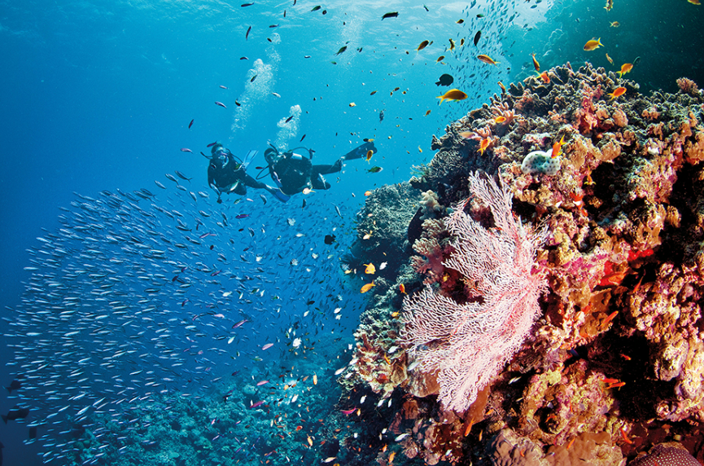
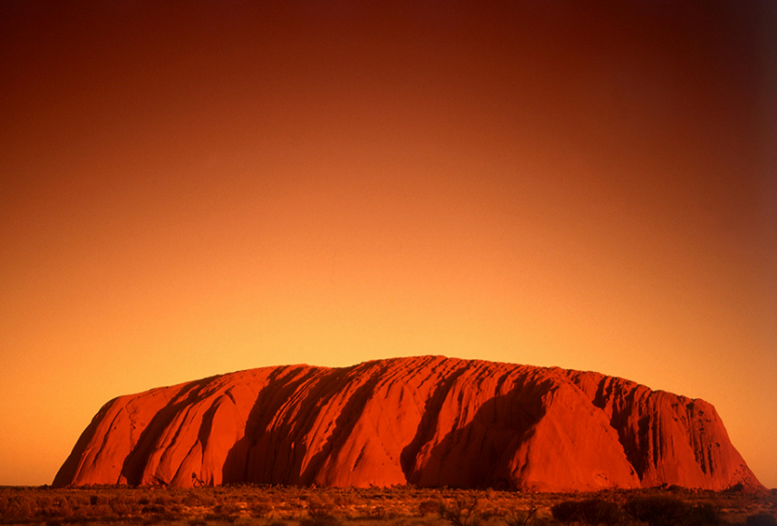
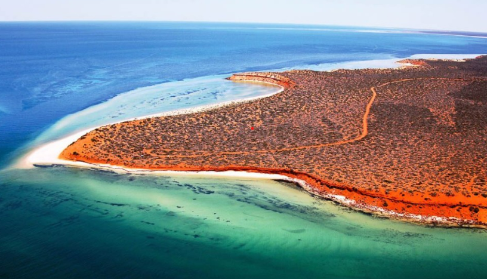

그레이트 배리어 리프

BBC 선정, 죽기전에 꼭 가봐야할 곳 2위로 선정되었다. 25000만년 전에 생성된 산호초 집단으로 세계에서 가장 큰 암초 시스템으로 불리우며 400종의 산호와 1500종의 열대어가 있습니다. 그레이트 배리어 리프에서는 스노클링부터 수쿠버다이빙등 다양한 방법으로 아름다움을 만끽 할 수 있다.
울룰루

울룰루는 호주의 중심이자 세계의 배꼽이라고 칭해지는 곳이다. 앨리스 스프링스의 남서쪽 450km 지점에 위치한 큰 바위산이다. 아침에 떠오르면서 혹은 저녁에 해가 지면서 시시각각 변화하는 장관으로 유명하다.
샤크베이

호주 서부 해얀의 퍼스에서 약 800km 북쪽으로 떨어져 있는 곳이다.석회암과 하얀 모래언덕, 절벽으로 이루어져 있으며 1만여 마리의 듀공과 가장 오래된 생명체 가운데 하나인 스트로마톨라이트 화석군, 희귀한 멸종위기 동물 5종이 살고 있는 자연의 보고이다